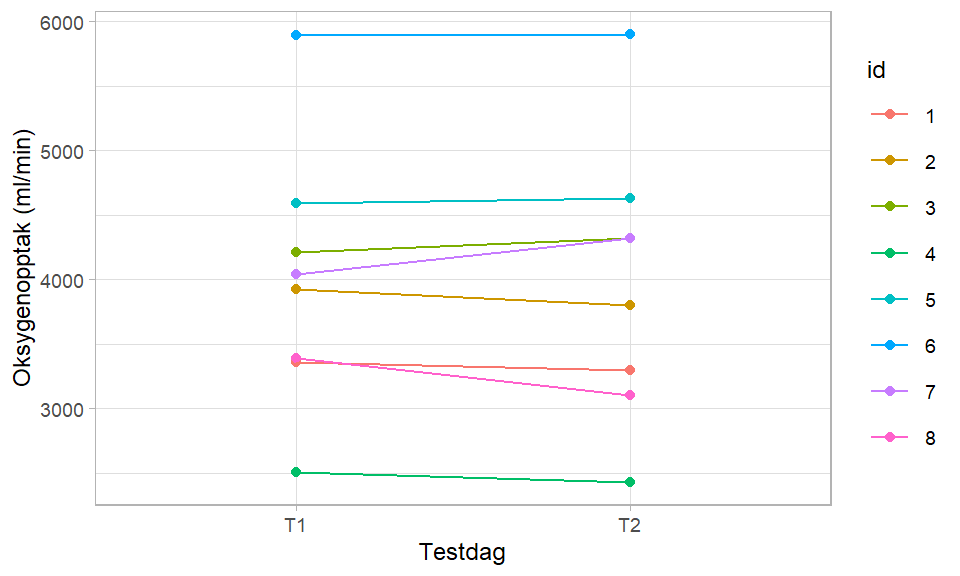
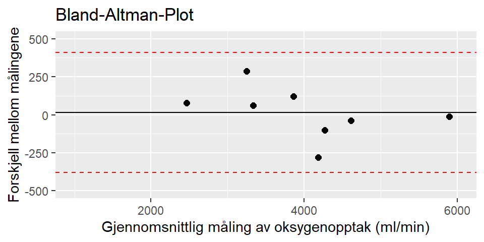

| Variable | Mean | Min | Max | SD |
|---|---|---|---|---|
| VO2max (ml/min) | 3,990.12 | 2,504.00 | 5,893.00 | 999.95 |
| VO2max (ml/min/kg) | 49.83 | 31.74 | 77.54 | 15.28 |
| Weight | 81.75 | 66.40 | 105.90 | 12.32 |
1 Reliabilitet
1.1 Introduksjon
Vi gjennomførte to testdager 26.09.2023 og 28.09.2023 i tiden 08:00-16:00. Hensikten med disse to dagene var å gjennomføre fysiologiske tester med høy grad av reliabilitet. Det er flere faktorer som påvirker både validitet og reliabilitet, og det er viktig å ta høyde for dette under fysiologisk testing. Vi gjennomførte testdag 1 og testdag 2 med kun én dag mellom for å sikre at deltakerne var på tilsvarende fysiologisk nivå ved begge testene. Vi tok derfor en rekke forhåndsregler for å sikre så like testforhold som mulig.
Reliabilitet refererer til reproduserbarheten til en f.eks. en fysiologisk test som gjennomfløres flere ganger i en repetert studie, der bedre reliabilitet indikerer bedre presisjon og måling av endring over tid (Hopkins 2000). Innenfor reliabiltet er det en rekke relevante begreper. Standardavvik (SD) forteller hvor langt unna dataene er fra gjennomsnittet (Spiegelhalter 2020), typical error (TE) beskrives av Hopkins (2000) som variabiliteten hos hver enkelt verdi og tenkes å kunne visualisere feilmarginen av et estimat. For å få nøyaktige måinger som kna sammenliknes er det viktig med presise måleinstrumenter som kalibreres nøye. Det er også faktorer som læringseffekt, motivasjon, restitusjon og ernæringstilstand som kan påvirke resultatene, og det er viktig å ta høyde for dette ved fysiologisk testing. Hopkins (2000) hevder at det kreves om lag 50 deltakere og 3 repeterte målinger for å kunne estimere reliabiliteten. Dette er for å utelukke de overnevnte faktorerne.
Kroppens maksimale oksygenopptak (VO2maks) gir informasjon om en persons maksimale aerobe kapasitet. Oksygenopptaket bestemmes av både sentrale- og perifere faktorer og kan illustreres ved Flick’s likning: \[VO_2 = (HR x SV) x (aO_2 – vO_2) \] En VO2maks-test går ut på at man måler hvor mange ml oksygen en person evner å ta opp og omsette per minutt. Oksygenkravet øker lineært med belastningen helt til personen når sin maksimale aerobe kapasitet, da vil kurven flate ut eller eventuelt synke. En persons maksimale oksygenopptak kan beskrives både i form av absolutte tall (ml/min) eller som relative tall i forhold til kroppsvekt (ml/kg/min).
1.2 Metode
VO2makstesten gjennomføres som en trappetrinnstest der motstanden øker med 25W hvert minutt til utmattelse/når RPM < 60. VO2målinger registreres hvert 30 sek. Deltakerne startet testen på enten 150W, 200W eller 250W avhengig av fysisk form og erfaring med sykkel. Hvert minutt øker watten med 25 helt til utmattelse. Etter endt test ble informasjon innhentet og plottet i ferdigstilt Excel-dokument. **Praktisk gjennomføring/tiltak for å sikre reliabilitet**
Selv om en tydelig protokoll er essensielt for å sikre reliable tester på en fysiologilab, er det flere hensyn som må tas underveis. Vi begynte hver test med å kalibrere utstyret slik at det var oppdatert etter forholdene til hver deltaker hver klokketime, for å minimere risikoen for at utstyret skal måle feil (Tanner and Gore 2013). For å sikre lik grad av verbal motivasjon og formulering av instruks, valgte v å bruke samme testleder på hver person (Halperin, Pyne, and Martin 2015). Vi ha også instrukser om at kosthold og søvn skulle være likt før og på testdagen, samt ingen trening mellom testene da detet er faktorer som kan påvirke metabolisme og prestasjon, dette ble dog ikke kontrollert (Tanner and Gore 2013).
1.3 Resultater
Etter testdag 1 (T1) fikk vi en oversikt hvilket fysiologisk nivå deltakerne i prosjektet vår på. Vi valgte å undersøke variablene VO2max (ml/min), VO2max (ml/min/kg) og kroppsvekt. Se Tabell 1.1 for oversikt over T1.
Formålet med dette prosjektet var å teste reliabiliteten på utvalgte fysiologiske mål mellom T1 og T2. Figur 1.1 gir en oversikt over resultatet på T1 og T2 for hver ID. Oversikt over aktuelle reliabilitetstall finner man i Tabell 1.2.
Standardavvik (SD) kan forklares ved et mål på hvor stor spredningen er i forhold til datapunktenes middelverdi/gjennomsnitt, og definerer hvert enkelt datapunkts avvik fra gjennomsnittet (Spiegelhalter 2020).
Variasjonskoeffisienten (CV) angir et spredningsmål for verdiene i et datasett. CV utrykker ofte variasjon i forhold til gjennomsnittsverdien og angis i prosent (Spiegelhalter 2020).
Typical Error (TE) eller standardfeil er variabiliteten hos hver enkelt verdi og tenkes å kunne visualisere feilmarginen av et estimat. Eksempelvis vil en standardfeil kunne forklares gjennom biologiske prosesser som påvirker for eksempel kraftutvikling, som følge av mentale eller fysiske faktorer (Hopkins 2000).
Limits of agreement (LoA) viser til 1,96 standardavvik fra den gjennomsnittlige differansen mellom T1 og T2. Dette er illustrert i Figur 1.2 med et Bland-Altman-Plot.
| Variable | Mean | SD | TE | CV | LoA |
|---|---|---|---|---|---|
| VO2max (ml/min) | 3,982.78 | 166.91 | 118.02 | 2.96 | 394.68 |
| VO2max (ml/min/kg) | 49.50 | 2.48 | 1.75 | 3.54 | 5.87 |
| Weight | 82.07 | 1.73 | 1.22 | 1.49 | 4.09 |

